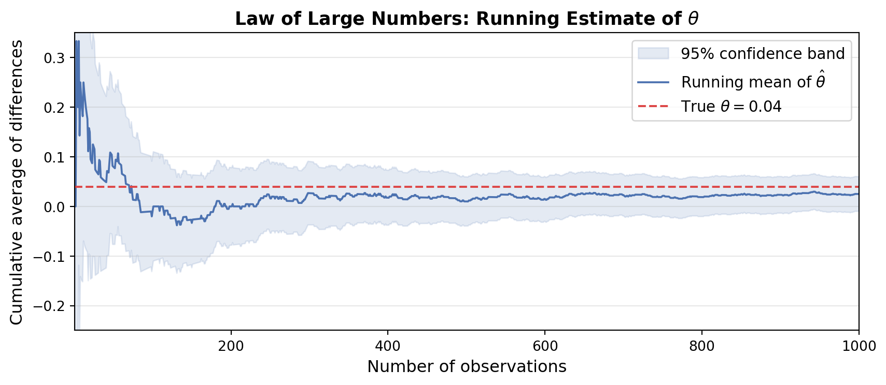

Simulating Key Ideas from Classical Frequentist Statistics
Author
Ziyan (Freya) Zheng
Published
April 13, 2026
Introduction
I run a personal website with a landing page where visitors can subscribe to my newsletter. The sign-up form is accompanied by a short line of text — a “call to action” (CTA) — designed to encourage visitors to subscribe. But does the exact wording of that line actually matter?
To find out, I designed a simple experiment comparing two CTAs:
CTA A: “Sign up for our newsletter here!”
CTA B: “Stay up to date by signing up!”
Rather than guessing which performs better, I ran an A/B test. Each visitor who arrives at the site is randomly assigned to see one of the two versions. At the end of the experiment, I compare the sign-up rates between the two groups. Because assignment is random, any difference in sign-up rates can be attributed to the wording rather than to differences in the visitors themselves.
In this post, I walk through the key statistical ideas behind this A/B test — from estimation and sampling variability to hypothesis testing and a common pitfall called “peeking” — all illustrated through simulation.
The A/B Test as a Statistical Problem
Each visitor either signs up or does not, so we can model each visitor’s outcome as a draw from a Bernoulli distribution with parameter \(\pi\) — the probability of signing up. Because CTA wording may influence behavior, we allow this probability to differ by group: visitors who see CTA A have sign-up probability \(\pi_A\), and visitors who see CTA B have sign-up probability \(\pi_B\).
The quantity we care about is the difference in sign-up rates: \[\theta = \pi_A - \pi_B\]
If \(\theta > 0\), CTA A is more effective; if \(\theta < 0\), CTA B wins; if \(\theta = 0\), the two CTAs perform equally.
Since we cannot observe \(\pi_A\) and \(\pi_B\) directly, we estimate \(\theta\) from data using the difference in sample proportions: \[\hat\theta = \bar{X}_A - \bar{X}_B = \hat\pi_A - \hat\pi_B\]
Because each observation is either 0 or 1, the sample mean is just the proportion of visitors who signed up — so \(\bar{X}_A = \hat\pi_A\) and \(\bar{X}_B = \hat\pi_B\).
Simulating Data
In a real experiment we would not know the true values of \(\pi_A\) and \(\pi_B\) — that’s the whole point of running the test. But for this exercise we set them ourselves so that we can study how our estimator behaves when we know the truth.
Our sample estimate is close to the true value of 0.04 — reassuring, but not surprising given a sample of 1,000. The sections that follow explain why this estimate is trustworthy and how certain we should be about it.
The Law of Large Numbers
The Law of Large Numbers (LLN) states that as the sample size grows, the sample mean converges to the population mean. In our context, this means \(\hat\pi_A \to \pi_A\) and \(\hat\pi_B \to \pi_B\) as \(n \to \infty\), and therefore \(\hat\theta \to \theta\). The LLN is what gives us confidence that our estimator will be close to the truth when the sample is large enough.
To demonstrate this, I compute the element-wise differences between the CTA A and CTA B draws to form a vector of 1,000 paired differences. The cumulative average of this vector — the running mean after 1 draw, 2 draws, …, 1,000 draws — traces how quickly the estimate settles toward the true value of 0.04.
Code
diffs = data_A - data_Bcumulative_avg = np.cumsum(diffs) / np.arange(1, n +1)# ±1.96 SE confidence band: SE of running mean shrinks as 1/sqrt(k)# SE of a single difference ~ sqrt(pi_A(1-pi_A) + pi_B(1-pi_B))se_single = np.sqrt(pi_A * (1- pi_A) + pi_B * (1- pi_B))k = np.arange(1, n +1)band =1.96* se_single / np.sqrt(k)fig, ax = plt.subplots(figsize=(9, 4))ax.fill_between(k, cumulative_avg - band, cumulative_avg + band, color="#4C72B0", alpha=0.15, label="95% confidence band")ax.plot(k, cumulative_avg, color="#4C72B0", linewidth=1.4, label="Running mean of $\\hat{\\theta}$")ax.axhline(y=0.04, color="#DD4949", linewidth=1.5, linestyle="--", label="True $\\theta = 0.04$")ax.set_xlabel("Number of observations", fontsize=12)ax.set_ylabel("Cumulative average of differences", fontsize=12)ax.set_title("Law of Large Numbers: Running Estimate of $\\theta$", fontsize=13, fontweight="bold")ax.legend(fontsize=11)ax.set_xlim(1, n)ax.set_ylim(-0.25, 0.35)ax.grid(axis="y", alpha=0.3)plt.tight_layout()plt.show()

With only a handful of observations the running average is noisy and erratic — and the shaded confidence band is wide, reflecting high uncertainty. As the sample grows, the band narrows at rate \(1/\sqrt{n}\), squeezing down around the estimate as it converges toward the true value of 0.04. This is the LLN and the shrinking-variance property working together: more data means a more precise estimate and a tighter band of plausible values.
Bootstrap Standard Errors
Knowing that \(\hat\theta\) is close to \(\theta\) is only half the story. We also need to communicate our uncertainty — how much could \(\hat\theta\) plausibly vary from one experiment to the next? This is where standard errors and confidence intervals come in.
The bootstrap is a resampling technique that estimates variability without relying on a closed-form formula. The logic is simple: treat your observed data as a stand-in for the population, and simulate the act of re-running the experiment by drawing new samples (with replacement) from the data you already have. Each resample produces a new estimate \(\hat\theta^*\), and the standard deviation of many such estimates approximates the standard error of \(\hat\theta\).
Method Standard Error
Bootstrap 0.01859
Analytical 0.01825
95% Bootstrap CI for θ: [-0.0114, 0.0614]
The bootstrapped and analytical standard errors are nearly identical — a reassuring sign that both approaches capture the same underlying variability. The 95% confidence interval for \(\theta\) does not include zero, suggesting that CTA A’s higher sign-up rate is unlikely to be pure chance. We are 95% confident the true difference lies somewhere within that range.
The Central Limit Theorem
The Central Limit Theorem (CLT) tells us that regardless of the shape of the underlying distribution, the sampling distribution of the sample mean becomes approximately Normal as the sample size grows. Since \(\hat\theta = \bar{X}_A - \bar{X}_B\) is a difference of sample means, the CLT applies here too: for large enough \(n\), the distribution of \(\hat\theta\) is approximately \(N(\theta, \text{SE}^2)\).
Our individual observations are Bernoulli — a decidedly non-Normal distribution with only two possible values. Yet with enough data, the estimator based on those outcomes should look Normal. Let’s see this in action.
For each of four sample sizes \(n \in \{25, 50, 100, 500\}\), I simulate 1,000 experiments and compute \(\hat\theta\) in each. The four resulting histograms show how the sampling distribution evolves with \(n\).
At \(n = 25\) the histogram looks rough and slightly asymmetric — with so few observations per group, the estimator hasn’t fully shed its Bernoulli origins. By \(n = 100\) the shape is clearly bell-shaped, and by \(n = 500\) the sampling distribution closely matches the overlaid Normal curve. This is the CLT in action: even though individual outcomes are binary (0 or 1), the estimator converges to a Normal distribution as we collect more data. This Normal approximation is what enables us to perform hypothesis tests and construct confidence intervals using familiar formulas.
Hypothesis Testing
Now that we know \(\hat\theta\) is approximately Normally distributed for large samples, we can use this result to perform a formal hypothesis test.
We frame the question as a null hypothesis test: \[H_0: \theta = 0 \quad \text{(the two CTAs perform equally)}\]\[H_1: \theta \neq 0 \quad \text{(the CTAs differ in effectiveness)}\]
The goal is to assess whether the data provide enough evidence to reject \(H_0\). To do this, we compute a test statistic by standardizing \(\hat\theta\): \[z = \frac{\hat\theta - 0}{\text{SE}(\hat\theta)}\]
The logic has three steps:
By the CLT, \(\hat\theta\) is approximately Normal for large samples. Under \(H_0\), its mean is 0.
Dividing a Normal random variable by its standard deviation yields a standard Normal \(N(0,1)\). So under \(H_0\), \(z \;\dot\sim\; N(0,1)\).
Because we know the distribution of \(z\) under the null, we can calculate the probability of seeing a value as extreme as ours — the p-value — and use it to decide whether to reject \(H_0\).
A note on “t-test” terminology: This procedure is often called a two-sample t-test. The classical t-distribution arises when data are drawn from a Normal population and the variance must be estimated — the ratio then follows an exact t-distribution. In our setting the data are Bernoulli, so there is no exact t-distribution result. What justifies the z-test here is the Normal approximation to the binomial: by the CLT, the sample proportion \(\hat\pi\) from a Bernoulli population converges to a Normal distribution as \(n \to \infty\), and so does the difference \(\hat\theta\).
There is a subtlety worth noting: we plug in \(\hat\pi_A\) and \(\hat\pi_B\) — estimated, not true — when computing the SE. In small samples, this additional estimation uncertainty means the test statistic is not quite standard Normal, and a t-distribution with finite degrees of freedom would be more appropriate. In large samples (\(n \gtrsim 30\) per group, and certainly at \(n = 1000\)), the t-distribution converges to the standard Normal, so the distinction disappears in practice. The key takeaway: the z-test is valid here because the Normal approximation to the binomial holds for large samples, not because we know the true variance.
Point estimate θ̂ = 0.0250
Standard error = 0.0183
z-statistic = 1.370
p-value = 0.1708
With a z-statistic of 1.370 and a p-value of 0.171, we fail to reject the null hypothesis at the conventional \(\alpha = 0.05\) level. The data do not provide statistically significant evidence that CTA A and CTA B differ in sign-up rate — at least not in this particular simulated sample. This is a useful reminder that even when a true effect exists (\(\theta = 0.04\)), a single sample of 1,000 per group does not guarantee a significant result; sampling variability can obscure a real but modest difference.
The T-Test as a Regression
It turns out the two-sample test we just ran is mathematically equivalent to a simple linear regression. This equivalence is worth understanding because regression software can serve as a drop-in replacement for the t-test, and the framework naturally extends to more complex designs.
Setup: Stack the CTA A and CTA B outcomes into a single dataset. Each row has:
\(Y_i\): 1 if visitor \(i\) signed up, 0 otherwise
\(D_i\): 1 if visitor \(i\) saw CTA A, 0 if they saw CTA B
We then fit: \[Y_i = \beta_0 + \beta_1 D_i + \varepsilon_i\]
The coefficients have natural interpretations:
\(\beta_0 = E[Y_i \mid D_i = 0]\) — the mean of the B group, estimating \(\pi_B\)
\(\beta_0 + \beta_1 = E[Y_i \mid D_i = 1]\) — the mean of the A group, estimating \(\pi_A\)
Therefore \(\beta_1 = \pi_A - \pi_B = \theta\), and the OLS estimate \(\hat\beta_1\) is numerically identical to \(\hat\theta = \bar{X}_A - \bar{X}_B\)
SE type β̂₁ estimate Std. Error t-statistic p-value
OLS (homoscedastic) 0.025 0.0183 1.3688 0.1712
HC1 robust 0.025 0.0183 1.3688 0.1710
HC3 robust 0.025 0.0183 1.3682 0.1713
Two-sample reference: θ̂ = 0.0250, SE = 0.0183, z = 1.370, p = 0.1708
The coefficient \(\hat\beta_1\) matches our earlier \(\hat\theta\) exactly across all three SE variants. A few things to note:
Homoscedastic vs. robust SEs. Standard OLS assumes that the variance of \(\varepsilon_i\) is the same for all observations (homoscedasticity). In an A/B test with a binary outcome, this assumption is almost certainly violated: the variance of a Bernoulli random variable is \(\pi(1-\pi)\), which differs between groups whenever \(\pi_A \neq \pi_B\). Using HC1 or HC3 heteroscedasticity-consistent standard errors (White’s robust SEs) corrects for this without requiring any assumption about the error structure.
HC1 applies a degrees-of-freedom correction: \(\frac{n}{n-k}\) times the squared residuals.
HC3 uses a leave-one-out adjustment that is more conservative and performs better in small samples.
In practice, for large balanced A/B tests the three approaches give nearly identical results — as we see here. But defaulting to robust SEs is a good habit: it costs nothing and insures against heteroscedasticity, clustering, or other violations that could otherwise produce misleadingly narrow confidence intervals.
A note on using OLS with a binary outcome. This model — regressing a 0/1 outcome on a treatment indicator — is known as the Linear Probability Model (LPM). A natural question is: why not use logistic regression, which is purpose-built for binary outcomes?
The answer is that in A/B testing, we care about the treatment effect\(\beta_1 = \pi_A - \pi_B\), not about predicting individual probabilities. The LPM gives us an unbiased, directly interpretable estimate of this difference. Logistic regression would model the log-odds ratio, which does not translate cleanly into a probability difference without additional computation.
The standard objection to LPM — that it can produce predicted probabilities outside \([0, 1]\) — matters for prediction tasks but is irrelevant here. With a binary treatment indicator, the model only ever predicts two values: \(\hat\beta_0\) for the control group and \(\hat\beta_0 + \hat\beta_1\) for the treatment group, both of which will be valid proportions as long as the sample sizes are reasonable. Using the LPM for causal inference in randomized experiments is standard practice in both industry and academic economics.
The regression framing also scales naturally: you can add covariates (device type, traffic source) to increase precision, interaction terms to detect heterogeneous treatment effects, or additional treatment arms — all within the same unified framework.
Effect Size and Minimum Detectable Effect
Statistical significance tells us whether an effect is real; it says nothing about whether the effect is worth acting on. In business settings — especially fintech or e-commerce — the more important question is often economic significance: is the measured difference large enough to justify the cost of change?
Effect size
A natural way to standardize \(\hat\theta\) is Cohen’s \(h\) for proportions:
The arcsine transformation stabilizes variance across different baseline rates, making \(h\) comparable across experiments with different baseline conversion rates.
Our effect is small by conventional benchmarks — a useful reminder that statistical significance and practical importance are not the same thing.
Minimum Detectable Effect (MDE)
Before running an experiment, a product team must decide: what is the smallest effect we actually care about detecting? This is the Minimum Detectable Effect (MDE). Given a chosen MDE, desired power \(1-\beta\), and significance level \(\alpha\), the required sample size per group is:
MDE (pp) Required n / group Total visitors
1% 25116 50232
2% 6279 12558
3% 2790 5581
4% 1569 3139
5% 1004 2009
10% 251 502
The table shows the steep cost of chasing small effects. To reliably detect a 1 percentage-point lift you need tens of thousands of visitors per group; a 4 pp lift (our simulated truth) requires a few hundred. In practice, the MDE should be set by the business, not the statistician: if a 1 pp improvement in sign-up rate translates to $50k/year in additional revenue but the engineering change costs $200k to maintain, the experiment is not worth running regardless of statistical power.
The right question is not “is the effect significant?” but “is the effect large enough to matter — and is running this experiment worth the cost?”
The Problem with Peeking
Suppose my boss is impatient. Rather than waiting until all 1,000 visitors have been observed in each group, she wants to check the results after every 100 visitors per group (at \(n = 100, 200, \ldots, 1000\)) — and declare a winner as soon as any of those 10 tests comes back significant at \(\alpha = 0.05\).
This practice is known as peeking, and it is a serious problem in classical frequentist testing.
A single test at \(\alpha = 0.05\) has a 5% false positive rate: it will incorrectly reject a true null hypothesis 5% of the time. But each additional peek gives another opportunity for a spurious significant result. Across 10 peeks on accumulating data, the overall probability of at least one false rejection is much higher than 5% — even when there is truly no difference.
To quantify this, I simulate 10,000 experiments in a world where the null is true: \(\pi_A = \pi_B = 0.20\), so \(\theta = 0\). In each experiment, I peek at 10 equally spaced checkpoints and record whether any peek yields \(p < 0.05\).
The empirical false positive rate under peeking is roughly 2–3× the nominal 5% level. That means if your boss follows this strategy in a world where neither CTA is actually better, she will incorrectly declare a winner in roughly 1 out of every 5–6 experiments — not 1 in 20 as intended.
What can we do about it?
The root cause is that multiple correlated tests on accumulating data compound the chance of a spurious signal. Several approaches exist, each with different trade-offs:
Approach
Idea
Trade-off
Pre-register & test once
Fix \(n\) in advance, test at the end only
Simple, but no early stopping
Bonferroni correction
Divide \(\alpha\) by the number of peeks (\(\alpha' = 0.05/10 = 0.005\))
Conservative; loses power
Sequential testing (mSPRT)
Use a mixture Sequential Probability Ratio Test — designed so you can peek at any time and the Type I error stays controlled
Used by Optimizely, Netflix; requires choosing a prior on effect size
Group Sequential Methods
Pre-specify a small number of interim analyses with adjusted thresholds (e.g., O’Brien-Fleming)
Common in clinical trials; less flexible than mSPRT
In industry, mSPRT (mixture Sequential Probability Ratio Test) has become the standard for online experimentation platforms. It produces always-valid p-values: you can check the result at any point during the experiment and the false positive rate is still controlled at \(\alpha\). The key insight is that the test statistic is a likelihood ratio martingale, which by construction satisfies a valid stopping rule at any time.
Bottom line: Classical p-values carry a one-shot guarantee. If you need to monitor an experiment in real time, use a method built for sequential testing — don’t apply a fixed-horizon test to interim data.